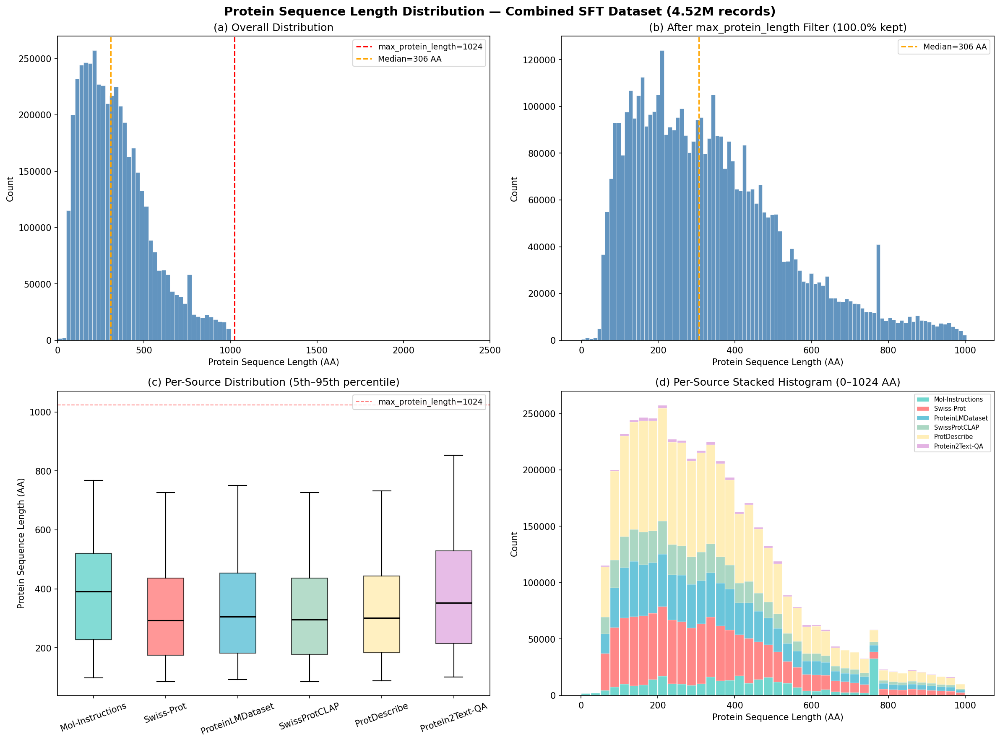

Our initial SFT training used a single source — the 505K protein instruction pairs from Mol-Instructions. That was enough to validate the ESM-3 + Qwen3 pipeline, but the model's protein knowledge remained shallow. Today we assembled a combined dataset pulling from six independent sources, bringing the total to 4.5 million records spanning function prediction, subcellular localization, subunit structure, gene naming, and open-ended protein QA.
This post walks through the sources we selected, how the sequences are distributed across length and task, and what the data quality looks like going into training.
Why More Data?
The original Mol-Instructions set covers five tasks well — catalytic activity, domain/motif, general function, protein function, and protein design — but they all come from one paper's annotation pipeline. The model learns how that particular group phrased things, from that particular subset of UniProt. We wanted broader coverage:
- Different annotation styles: SwissProtCLAP uses long-form paragraph descriptions where Mol-Instructions uses structured one-liners. ProtDescribe gives terse location labels. Protein2Text-QA asks diverse natural questions.
- More tasks: Subunit structure, tissue specificity, post-translational modifications, gene prediction, and induction signals are absent from Mol-Instructions entirely.
- Scale: Going from 300K effective training records (after design task exclusion) to 4.5M should improve generalization, especially on longer and rarer sequences that were underrepresented.
The Six Sources
We ended up with six sources after evaluating several candidates. Two were dropped early — Protein-QA Bilingual Corpus (~80K) is unreleased, and Wikipedia Protein (~15K) added noise without unique value. Here is what made the cut:
| Source | Records | Tasks | What It Brings |
|---|---|---|---|
| Mol-Instructions | 299K | 4 (design excluded) | Curated instruction pairs from ICLR 2024 |
| Swiss-Prot | 1.08M | 3 | Gene prediction, organism prediction, function |
| ProteinLMDataset | 826K | 6 | Subunit, PTM, disease, tissue, induction, function |
| SwissProtCLAP | 511K | 1 | Rich paragraph-length protein descriptions |
| ProtDescribe | 1.76M | 4 | Naming, similarity, location, function description |
| Protein2Text-QA | 52K | 1 | 44,915 unique questions — highest instruction diversity |
Each source was downloaded and converted to a standard JSON schema ({instruction, input, output, metadata}) with protein sequences wrapped in triple backticks. The combined directory uses symbolic links with source prefixes (mol_, sp_, plm_, clap_, pd_, p2t_) pointing back to processed files, so nothing is duplicated on disk.
Sequence Length Distribution
One of the first things to check with any protein dataset is the length distribution. Protein length directly controls ESM-3 encoder memory (geometric attention is O(L^2)), training sequence length, and the quality of structural representations.

The distribution peaks around 150-350 amino acids — the typical range for single-domain proteins — and has a long right tail extending to 1,000 AA where our converters cap the sequences.
| Statistic | Value |
|---|---|
| Min | 3 AA |
| 5th percentile | 89 AA |
| 25th percentile | 184 AA |
| Median | 306 AA |
| Mean | 339 AA |
| 75th percentile | 450 AA |
| 95th percentile | 751 AA |
| Max | 1,000 AA |
A few things stand out:
Mol-Instructions has a hard cutoff at 768 AA. The original dataset was pre-filtered by its authors. Every other source extends to 1,000 AA, which means the combined set introduces longer proteins that the model hasn't seen during previous training runs.
The median sits at 306 AA. For token-budget batching with a budget of 10,240 tokens, this means most micro-batches will pack 15-20 samples. Only the long-tail batches (sequences approaching 1,000 AA) will shrink to 3-5 samples. The max_batch_size: 20 cap we set for H100 80GB GPUs aligns well with this distribution.
No records exceed the 1,024 AA encoder cap. Our converters filter at 1,000 AA and the training config sets max_protein_length: 1024, so the _filter_long_proteins() step drops zero records. All 4.52M effective training records pass through.
Per-Source Comparison
Each source tells a slightly different story about which proteins it covers:
| Source | Records | Mean | Median | Max | P95 |
|---|---|---|---|---|---|
| Mol-Instructions | 299K | 398 | 391 | 768 | 768 |
| Swiss-Prot | 1.08M | 329 | 293 | 1,000 | 726 |
| ProteinLMDataset | 826K | 342 | 306 | 1,000 | 750 |
| SwissProtCLAP | 511K | 330 | 296 | 1,000 | 727 |
| ProtDescribe | 1.76M | 335 | 301 | 1,000 | 732 |
| Protein2Text-QA | 52K | 394 | 353 | 1,000 | 853 |
Mol-Instructions skews longer (mean 398 vs ~330 for others) because it draws from enzymes and multi-domain proteins. Protein2Text-QA also runs longer on average — its QA pairs tend to focus on well-characterized proteins that happen to be larger. The four UniProt-derived sources (Swiss-Prot, ProteinLMDataset, SwissProtCLAP, ProtDescribe) cluster tightly around a median of 293-306, which makes sense given they sample from the same underlying database.
Data Quality Observations
We ran a full audit of all 20 JSON files. The headline: all pass schema validation, all sequences are extractable by the loader, and nothing blocks training. But there are a few things worth knowing.
Single-word outputs in subunit and location tasks. plm_subunit.json has 86K records (31%) where the output is just "Monomer." or "Homodimer." — accurate per UniProt, but not the kind of verbose response we want the model to learn. pd_subcellular_location.json has a similar pattern with "Secreted." and "Nucleus." at 2.9%. We may want to filter these or augment them with explanatory text in a future pass.
Within-file duplicates at 12-16%. ProtDescribe, ProteinLMDataset, and SwissProtCLAP each have duplicate (input, output) pairs caused by instruction template diversification — same protein and same annotation, different instruction phrasing. It is intentional template augmentation, but it inflates the effective weight of those sources. Something to revisit if the model starts overfitting to specific templates.
72.8% of unique sequences appear in 3+ sources. Nearly all sources derive from UniProt/Swiss-Prot, so the same ~440K core proteins show up across most of them. This is acceptable because each source asks different questions about the same protein — function description in one, subcellular location in another, subunit structure in a third. The model sees the same protein in different analytical contexts, which should reinforce understanding rather than waste capacity.
Training Configuration
The combined dataset trains with two new experiment configs (sft_esm3_mlp_combined and sft_esm3_perceiver_combined), identical to the single-source versions except for the data pointer and batch settings tuned for H100 80GB:
| Setting | Value |
|---|---|
| Data | combined_sft_260225 (4.52M effective records) |
| Token budget | 10,240 tokens per micro-batch |
| Max batch size | 20 samples |
| Gradient accumulation | 4 steps |
| Effective batch | ~328K tokens (8 GPUs x 4 accum x 10,240) |
| Sampling temperature | 0.7 (upsamples smaller sources) |
| Excluded files | mol_protein_design.json (no ESM-3 input) |
What's Next
- Launch the combined-data training run — MLP projector first, then Perceiver Resampler for the ablation comparison
- Monitor for the single-word output problem — if eval generations get terse, filter those records
- Consider deduplication — removing ~460K within-file duplicates would cut 10% of training time with minimal information loss